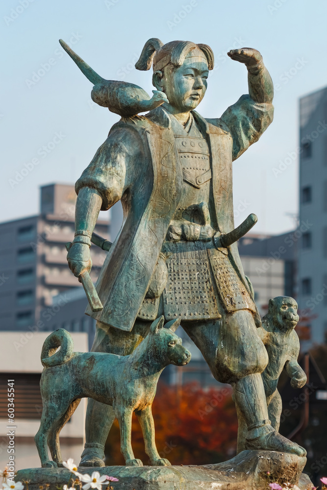

Myths
Midas
In terms of the legends one good one that pretty well know is the story of king Midas and his golden touch.
The story of king Midas is recorded in a text known as Ovid’s metamorphoses which is a fifteen-book poem
that recounts various myths and legends from the Greek creation myth to the apotheosis of Julius Caesar. Its
kind of your one stop shop for a primary source though you might also want to look into other places as the
stories can change form on telling to another.
The story of king Midas’s golden touch begins with the god ofwine Dionysus who notices that one of his many
followers is missing, namely an older satyr named Silenus who
was Dionysus’s foster father. Silenus had drunkenly wandered off and gotten lost namely in a region that
belonged to king Midas. The satyr was captured and brought to king Midas when he is discovered and
fortunately Midas actually recognizes who he is and throws a 10-day feast in his honor. When Dionysus finds
them, he is very impressed with how Midas has treated his father the god offers Midas a boon as a reward and
Midas asks for anything he touches to turn to gold. Dionysus grants this wish and Midas is excited to by his
new gift at least until dinner time where he realizes that touching food and drink turns it into gold like
everything else and its kind of hard to eat without touching the food. This is what makes Midas want to undo
his gift, if you’ve heard a version that mentions his daughter that actually wasn’t added until the 1850s as
far as I know. Midas goes to Dionysus for help and the wine god sends him to the river Pactolus to wash off
which removes the enchantment.
Momotarō
 Coming from Japan the myth of Momotarō a myth that has a lot of cultural significance for Japan due to it tying in nicely to a certain historical event called World War 2 we’ll come back to that later. The actual story of Momotarō is fairly simple overall it starts when one day an older woman finds a large peach floating down the river and takes it home where it split open to reveal a baby. Her and her husband name the child Momotarō, which translate to “peach boy”, and he grows up to be an abnormally strong young man. One day ogres from a nearby island start causing problems and kidnapping people and Momotarō takes it upon himself to fight back against them and so sets off with a suit of armor and some kibidongo from his parents. Along the way Momotarō meets a dog, a monkey and a pheasant who he befriends and shares his kibidongo with. While the animals are all his friends, they aren’t all friends with each other and the three of them fight a lot along the way to the ogre island until Momotarō talks some sense into them and also threatens to make them all leave if they don’t get over their differences. Afterwards they have a long boat ride to work out their issues and by the time they make it to ogre island they are a well-oiled machine of heroes. As a group they are able to take out the ogres and win the day. Going back to the beginning this story ties into World War 2 nicely as a propaganda tool look at it this way Momotarō is Japan the animals are the citizens of Japan and the ogres are America, from this angle the story is about how unity could allow for Japan to defeat a stronger fighting force like America who was one of their biggest roadblocks to their imperialistic dreams. From there it kind of became a symbol for national pride in Japan.